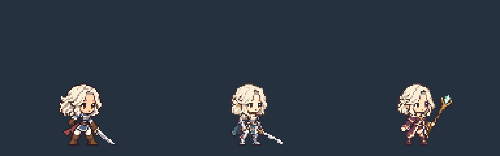

128×120 · 대기 48px · 발 기준점 (64,112) · 오른쪽 3/4 · 지팡이 staff
왼쪽부터 쿠키 r12 / 기사 r15 / 마법사. 동일한 픽셀 배율과 발 기준점입니다.

일시정지 이전 장 다음 장 기준선
시전 준비는 cast_start 220ms를 한 번 재생한 뒤 cast 480ms를 반복합니다. 아래 전체 시전 미리보기는 준비 후 유지 3회를 보여줍니다. 현재 게임에 적용하지 않은 제작 산출물입니다.
전체 접촉 시트 · manifest.json · 제작 기록